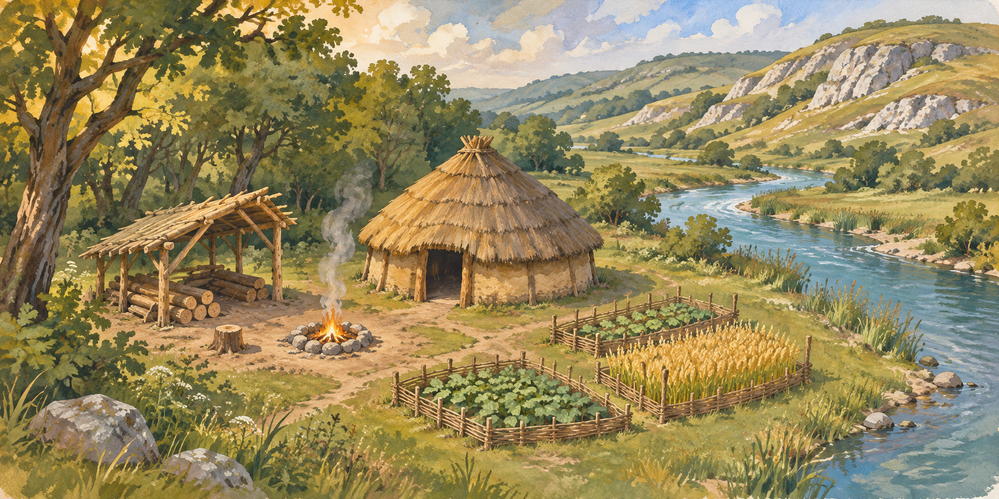
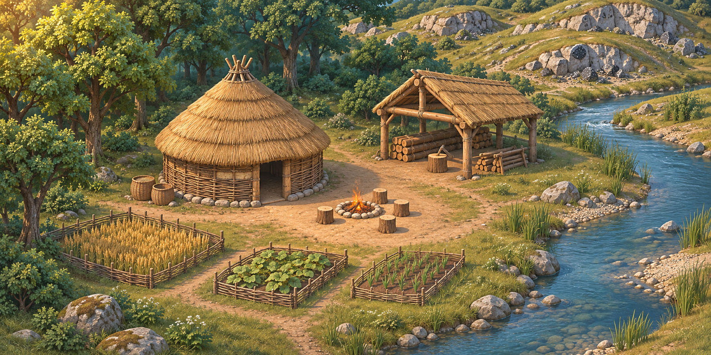

Riverbend · Stone Age
Integrated first-era candidate for Dima's review. Current SpriteKit and original geography are preserved. Candidate artwork is replaceable. No external reference image has been integrated.
Implementation and verification report · Production standards · ChatGPT media examples · Exact prompts and provenance
Three original visual directions
 A · Warm living miniature — candidate
A · Warm living miniature — candidate
B · Illustrated history
C · Architectural maquetteAll twenty building visuals
512px runtime sprites and144px thumbnails derive from retained transparent original rasters. These are not claimed to be editable3Dmodels. Native vector source supplies20research icons,12resource icons,5pillar icons and world terrain details.
Review in the installed app
Use the isolated Late developer settlement for dense-world art review. Browse all building/research categories, open resource popups and all seven chapter details. Normal-cost progression is verified separately from developer scenarios. Current normal save was preserved.
Available evidence
113Debug and103Release tests, all20sprite/thumbnail alpha+size checks, normal-cost four-strategy progression and recovery checks. Phone/tablet interaction results and physical-device limits are recorded in the milestone report. Human enjoyment and permanent artistic acceptance remain Dima’s review.